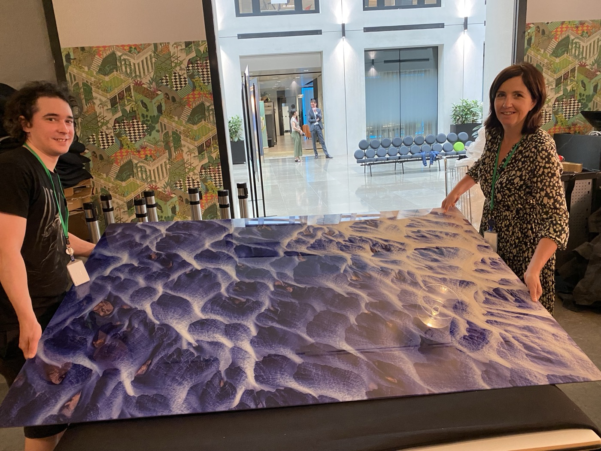
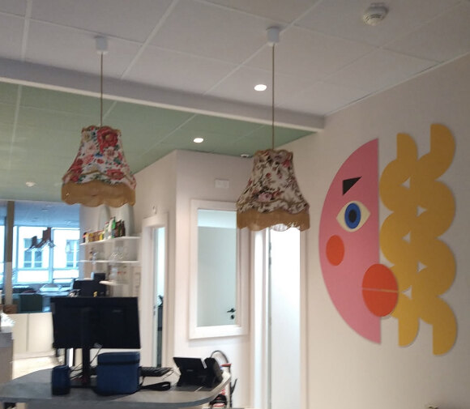
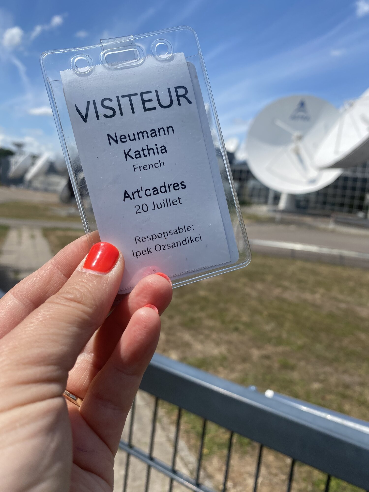
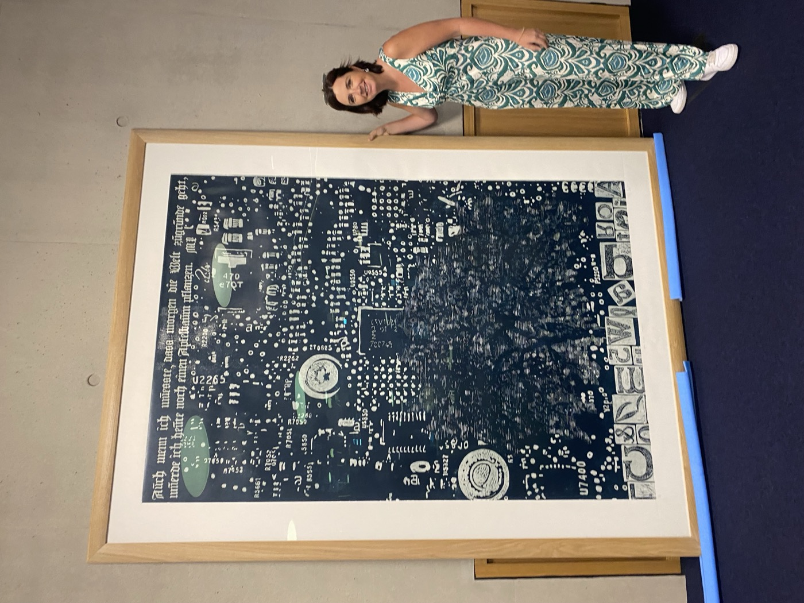
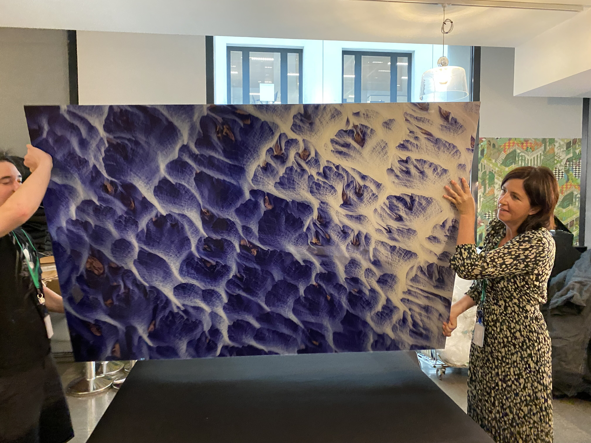
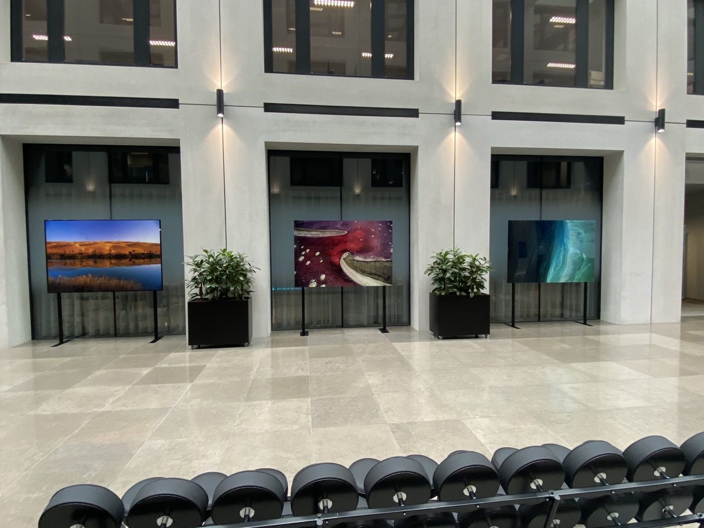
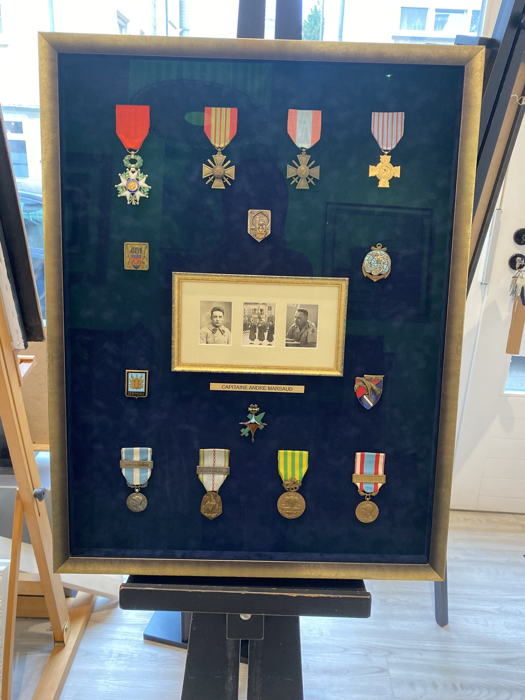
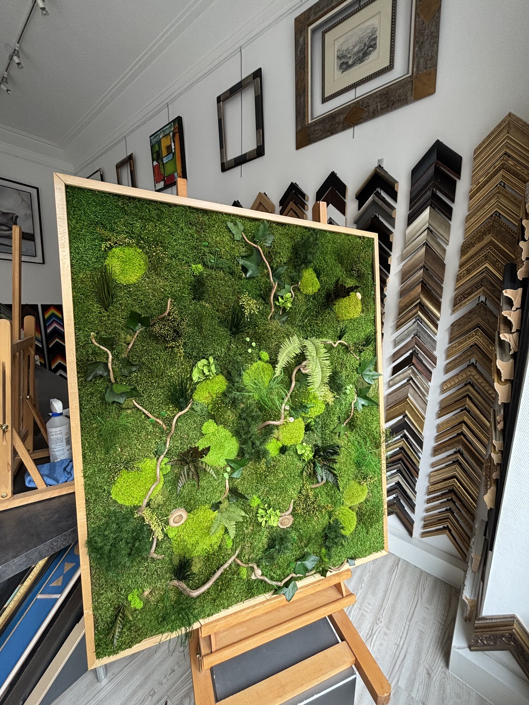
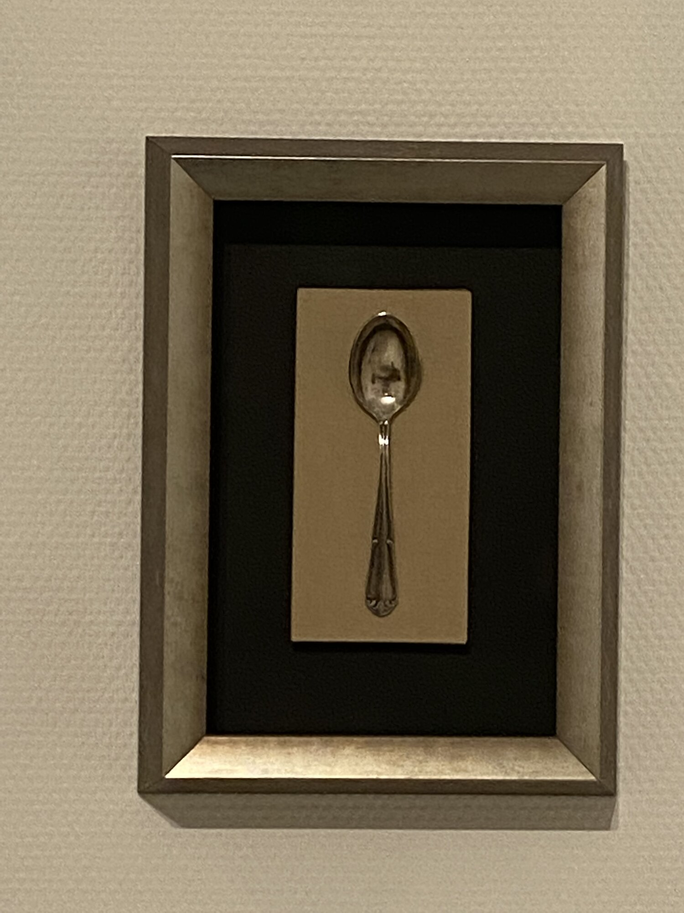
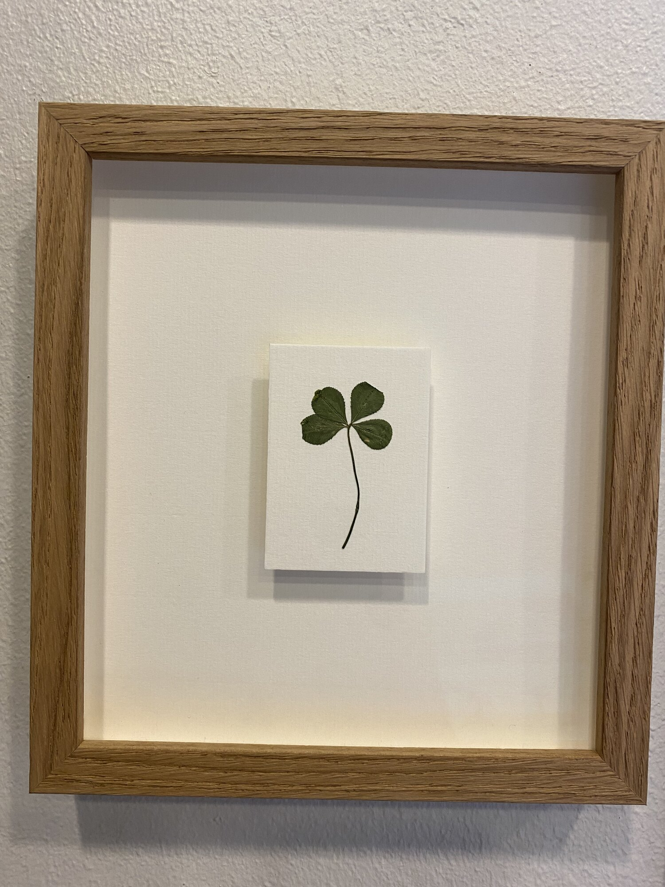

Encadreur d'art à Luxembourg
Encadrement d'art et restauration agréée monuments historiques pour institutions et grands comptes — Maison Neumann depuis 1972, à Hollerich.
Cadres standards
Aluminium ou bois, prêts à l'emploi.
02Cadres sur mesure
Conçus selon vos goûts et votre œuvre.
03Dorure & restauration
Tableaux et patrimoine agréé MH.
04Institutions & entreprises
Grands formats et pose sur site.
Un savoir-faire transmis depuis 1972
La Maison Neumann encadre et restaure à Metz depuis 1972. Après plus de 30 ans d'expérience, Kathia Neumann a souhaité développer ce savoir-faire au-delà des frontières en créant une antenne à Luxembourg.
Particuliers, artistes, collectionneurs, architectes, décorateurs et institutions y trouvent un accompagnement personnalisé, du petit cadre aux très grandes pièces.

Votre devis, en quelques clics
Composez votre cadre en ligne : baguette, passe-partout, verre. Le prix se calcule en direct, sans engagement.
- 1 Choisissez vos matériaux
- 2 Ajustez au millimètre
- 3 Recevez votre devis instantané
Click & Collect · retrait en 1 h à l'atelier
Des institutions, des marques et des artistes nous confient leurs œuvres
Deloitte, Accor, SES, la Bibliothèque nationale du Luxembourg, la Cour grand-ducale, SODIKART et M.Chat : nous encadrons leurs collections avec la même exigence artisanale.




Du format intime au monumental
Nous encadrons et installons sur site
Des médailles aux panneaux muraux de plusieurs mètres : nous maîtrisons l'encadrement sur mesure et la pose en entreprise, pour les particuliers comme pour les institutions.


Nous encadrons tout type d'objet

Médailles & décorations
Cadres végétaux
Objets (couverts, souvenirs)
Porte-bonheur & petites piècesRéalisations encadrées
Pop-art, street-art, aquarelles, photographies et pièces de collection : découvrez une sélection de nos encadrements sur mesure.
Questions fréquentes
Pourquoi choisir un encadreur artisan à Luxembourg ?
Nous réunissons atelier sur mesure, restauration agréée monuments historiques, dorure et galerie d'art depuis la tradition Maison Neumann (1972). Les montages complexes et les grands formats sont étudiés sur place.
Encadrez-vous les grands formats et les pièces monumentales ?
Oui. Nous encadrons et installons sur site des panneaux muraux de plusieurs mètres pour entreprises et institutions, en complément du petit format et des objets de collection.
Proposez-vous un devis en ligne ?
Oui, via notre configurateur Nielsen : baguette, passe-partout et verre, avec prix en direct. Pour les projets B2B ou les restaurations, nous établissons un devis personnalisé sur rendez-vous.
Ils nous ont fait confiance, ils en parlent
Avis Google et Facebook recueillis pour Art'Cadres Luxembourg et la Maison Neumann.
« Une adresse de confiance pour tous vos travaux d'encadrement. Mes œuvres ont toutes été parfaitement mises en valeur grâce aux conseils et au travail des artisans. »
« J'ai confié l'agrandissement et la mise en cadre d'une photo, je suis ravi du résultat. Travail soigné, de très haute qualité, service impeccable. »
« Charmant accueil dans un cadre chaleureux, conseil personnalisé et professionnel. Vaste choix de cadres sur mesure, finition de qualité. »
« Parfait du début à la fin. Un travail de grande qualité, de très bons conseils et une vraie attention du détail, tout en maîtrisant le coût final. »
« L'encadrement de notre lithographie est juste parfait. Votre savoir-faire a sublimé l'œuvre. Merci pour la qualité et le soin des finitions. »
« J'en ai rêvé et la Maison Neumann l'a fait ! Le reste est du grand art. Merci à Katia et à son équipe. »